| Programa: | 7zip 4.65 para x86 y amd64 |
|---|---|
| Web: | http://www.7-zip.org/ |
| Instalador: | Instalar 32bits Instalar 64bits |
| 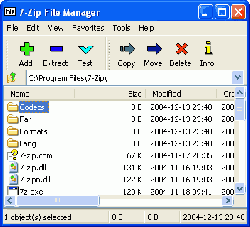 |
7-Zip es un compresor de datos libre para sistemas Microsoft Windows (con interfaz gráfica de usuario), DOS y Linux. Por defecto el programa utiliza el nuevo formato de archivo 7z, también libre, (con extensión .7z). Este formato usa los métodos de compresión LZMA y PPMD (más adecuado para textos), desarrollados por su autor, y puede aplicar un filtro a los ejecutables para aumentar su compresión. Los archivos 7z pueden ser sólidos, a diferencia de los zip, lo que mejora la compresión de conjuntos de archivos pequenos. Sus principales caracteristicas incluyen: - Alto porcentaje de compresión con el nuevo formato 7z. - Comprime un 30-70% más que el formato de compresión ZIP estándar. - Capacidad de auto-extracción para el formato 7z. - Integración con el shell de Windows (explorador de archivos) - Extensión para FAR Manager. |
| Programa: | Appupdater 1.2 |
|---|---|
| Web: | http://www.nabber.org/projects/appupdater/ |
| Instalador: | Instalar |
| 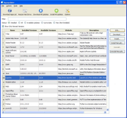 |
Appupdater proporciona a Windows una funcionalidad muy similar al apt-get/yum de Linux, permitiendo un proceso automático para la instalación, mantenimiento y actualización de programas. Resulta de gran ayuda tanto en el puesto de trabajo, como en entornos empresariales. - Las actualizaciones puede chequearse diariamente, sin necesidad de intervención del usuario. - Autodetección de instalaciones previas de aplicaciones - Instalación, actualización o desinstalación de software - Soporte para uso off-line o mediante un dispositivo USB - Soporte para plataformas Windows, Linux, Unix y Mac OS X - Soporte para listas de paquetes de instalación, o perfiles de equipos en entornos corporativos. - Permite crear nuestro propio repositorios - Soporte para dependencias |
| Programa: | Clam Win 0.95.1 |
|---|---|
| Web: | http://www.clamwin.com/ |
| Instalador: | Instalar |
| 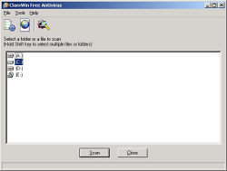 |
ClamWin es un antivirus libre para Microsoft Windows. A diferencia de algunos productos similares, ClamWin no escanea automáticamente los ficheros al ser leídos o escritos. Sin embargo, es posible obtener esta funcionalidad usando Winpooch. El equipo de desarrollo de ClamWin está investigando para anadir esta funcionalidad en futuras versiones. Sus principales características son: - Alto porcentaje de detección de virus y programas espía. - Planificador de búsqueda de virus. - Actualizaciones automáticas de la base de datos de virus. - Buscador de virus a petición del usuario. - Integración con los menús contextuales de Microsoft Windows Explorer. - Soporte de integración con Microsoft Outlook. |
| Programa: | Explore2FS |
|---|---|
| Web: | http://www.chrysocome.net/explore2fs |
| Instalador: | Instalar |
| 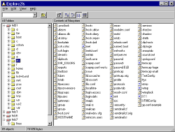 |
Explore2fs en una interfaz para acceder a particiones ext2/ext3 de Linux desde Windows. Esto resulta especialmente útil para poder traspasar datos e información sin tener que recurrir a memorias USB, u otros artificios. Existe una versión (en Beta) disponible en su web con soporte para Volúmenes Virtuales, y con la capacidad para leer otros sistemas de archivos como ReiserFS. |
| Programa: | Infrarecorder 0.46.2 |
|---|---|
| Web: | http://infrarecorder.org/ |
| Instalador: | Instalar |
| 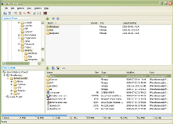 |
InfraRecorder es una herramienta libre para grabar CD/DVD. Dispone de las opciones habituales en otras soluciones propietarias como: - Creación de discos de datos, audio y mixtos. - Soporte para DVD de doble capa. - Formateo de discos vírgenes. - Borrado de discos reescribibles. - Grabación de imágenes ISO y BIN/CUE. - Fix de discos (lead-out) para miltisesión. - Análisis de bus IDE o SCSI para detección de dispositivos. - Copias al vuelo. - Conversión de pistas de audio a formato wav, wma, ogg y mp3. |
| Programa: | ISafer 3.0.0.1 |
|---|---|
| Web: | http://isafer.sourceforge.net/ |
| Instalador: | Instalar |
| 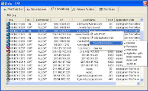 |
iSafer es un Firewall sencillo, pero que podemos configurar tan potente y seguro como queramos. Protege la red comprobando una serie de reglas especificadas por los usuarios. |
| Programa: | MD5summer |
|---|---|
| Web: | http://www.md5summer.org/ |
| Instalador: | Instalar |
| 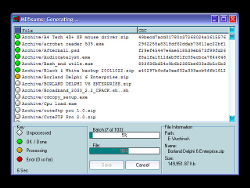 |
MD5summer es una aplicación que verifica y genera las sumas MD5, compatible con md5sum de Linux. Muy útil para comprobar si te has descargado correctamente el CD de Guadalinex ;) |
| Programa: | PDFCreator 0.9.8 |
|---|---|
| Web: | http://sourceforge.net/projects/pdfcreator/ |
| Instalador: | Instalar |
| 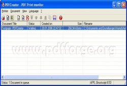 |
PDFCreator es una herramienta para convertir archivos al formato PDF. Al instalarlo, crea una impresora en el sistema en la cual volcaremos nuestro trabajo y lo convertirá automáticamente en un documento PDF. En el disco se incluye el archivo "spanish.ini" para su traducción al castellano. |
| Programa: | Putty 0.60 |
|---|---|
| Web: | http://www.chiark.greenend.org.uk/~sgtatham/putty/download.html |
| Instalador: | Instalar |
| 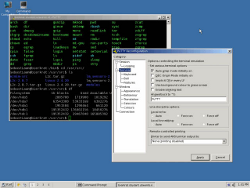 |
PuTTY es un cliente de SSH, Telnet y Rloging para Windows. |
| Programa: | TestDisk y PhotoRec 6.11 |
|---|---|
| Web: | http://www.cgsecurity.org/wiki/TestDisk_6.11_Release |
| Instalador: | Instalar |
|
Se incluyen dos aplicaciones en este paquete: TestDisk y PhotoRec. TestDisk es una herramienta para la recuperación de datos. Está orientado principalmente a la recuperación de particiones perdidas y sectores de arranque de los discos cuando este ha sido afectado por errores de software, virus o errores del operador (como eliminar accidentalmente la tabla de particiones). PhotoRec está orientado a la recuperación de archivos borrados o perdidos, incluyendo vídeos, documentos y archivos, de soportes como Discos duros, CDRoms y memorias de cámaras digitales. La ventaja de PhotoRec es que ignora el sistema de archivos del dispositivo de almacenamiento y accede directamente a la información, lo que permite recuperarlo incluso si el sistema de archivos está corrupto o se ha formateado. |
| Programa: | Tightvnc 1.3.10 |
|---|---|
| Web: | http://www.tightvnc.com/ |
| Instalador: | Instalar |
| 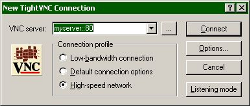 |
TightVNC es una herramienta de control remoto para equipos. Con ella, podemos ver el escritorio de un equipo en red y controlarlo con el teclado y el ratón, exactamente igual que si estuvieramos sentados delante. |
| Programa: | UltraVNC, versiones de 32 y 64 bits |
|---|---|
| Web: | http://www.uvnc.com/ |
| Instalador: | Instalar 32bits Instalar 64bits |
| 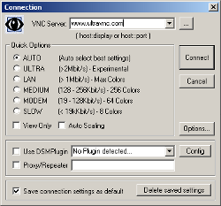 |
UltraVNC es una herramienta de control remoto que muestra el escritorio de un equipo de la red en nuestro terminal, y captura su teclado y ratón para tomar el control. UltraVNC incluye: - Transferencia de archivos. - Driver de vídeo. - Opciones de encriptación de las comunicaciones. - Ventana de chat. - Soporte para múltiples monitores. - Autoreconexión en caso de cortes. - ... |